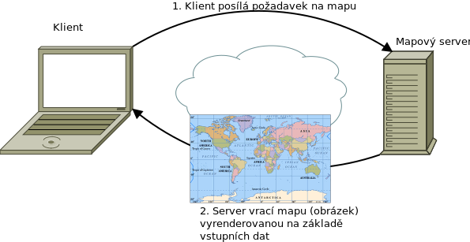
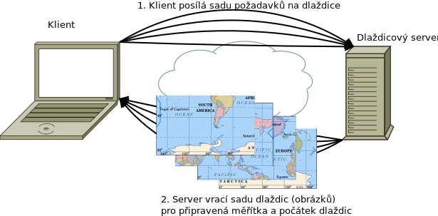
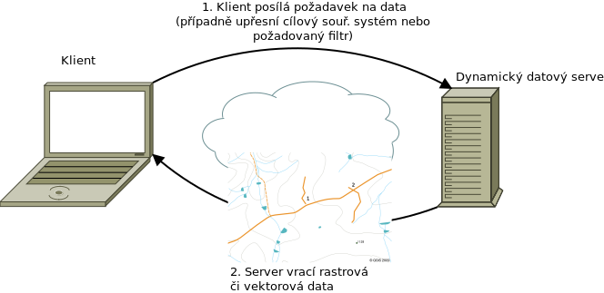
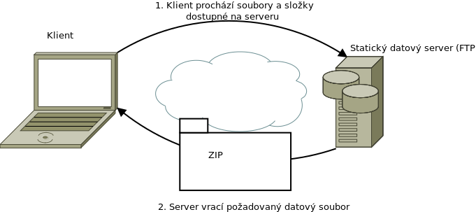
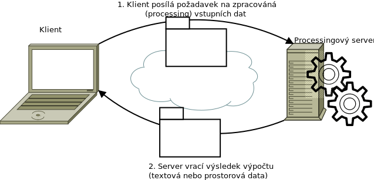
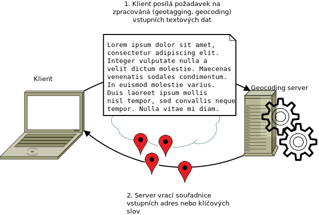

Počítačové systémy jsou v současné době většinou postaveny na
architektuře server - klient. Klient je program, který posílá
prostřednictvím definovaného protokolu požadavky (žádá o službu) na
server. Server (resp. specializovaný software na serveru) požadavky
odbavuje, a posílá klientovi zpět požadovaná data. Jde o síťovou
architekturu, která odděluje klienta (často aplikaci s grafickým
uživatelským rozhraním) a server, kteří spolu komunikují přes
počítačovou síť.
Klient se serverem komunikuje vždy prostřednictvím definovaného
aplikačního rozhraní - API (Application Programming
Interface). Je v podstatě jedno jak je API definováno, podstatné je,
aby bylo stabilní a v čase neměnné tak, aby se jednotlivé části
systému server-klient daly nahrazovat a měnit.
Přidělené rolí na server a klient nemusí být bezvýhradné. Jedná
se o způsob, jakým vystupují navenek a ne o absolutní roli v
rámci systému. Serverová aplikace může (a často se tak děje)
vystupovat jako klient vůči jiné serverové aplikaci.
Například mapový server poskytující obrazové podkladové mapy může
vystupovat jako klient vůči jinému serveru WFS, ze kterého si může stáhnout potřebná
vektorová data.
Běh geografických informačních systémů vyžaduje režii společnou pro
všechny informační systémy jako je autorizace a autentifikace
uživatelů, správa uživatelů celkově, logování došlých požadavků,
monitoring a reporting stavu systémů v reálném čase ale i v průběhu
historie a podobně.
Primárním smyslem informačních systémů je správa datových sad,
jejich údržba, aktualizace, zpřístupnění autorizovaným uživatelům. V
případě geografických informačních systémů se jedná zejména o
zpřístupnění a správu geografických datových sad.
Servery specifické pro oblast GIS můžeme podle funkce a zaměření rozdělit do
následujících skupin:
servery pro správu a poskytování prostorových dat,
servery pro správu metadat,
processingové (výpočetní) servery,
servery pro geotagging (geokódování).
V praxi se samozřejmě stává, že jeden projekt (produkt) umí najednou obsloužit
více skupin požadavků (např. GeoServer je primárně určen pro poskytování dat, s
příslušným zásuvným modulem umí ale obsloužit i processingovou službu, ArcGIS
firmy ESRI je na tom podobně).
Servery pro správu a poskytování geografických dat¶
Jedná se o asi největší skupinu serverů, souhrnně se označují jako
mapové servery či mapservery. Obecně se jedná o servery
poskytující geografická data na základě požadavku klienta.
Data mohou být buď surová - tedy přímo otisk souborů a databází uložených
na serveru, nebo nějakým způsobem pozměněná případně se může jednat pouze o
mapový náhled na zdrojová data.
1. Uživatel zadá kritéria pro požadovanou mapu → 2. požadavek je poslán
prostřednictvím sítě Internet na server → 3. Mapový server stáhne data z
databází a připraví výslednou mapu nebo výřez dat → 4. Server odešle
výsledek dotazu zpět uživateli
Mapové servery se dále dělí na statické a dynamické podle
toho, jestli poskytují předgenerovaná (statická) data
(např. FTP servery, data zpřístupněná pomocí souborů
Atom nebo třeba dlaždicové servery
poskytující předgenerované dlaždice pro předem definovaná mapová
měřítka a rozsah) nebo jestli výslednou odpověď „skládají“ až na
základně vstupných požadavků, které se mohou měnit (což jsou typické
webové mapové servery).
Podle druhu výstupných dat a zejména aplikačních rozhraní (API) můžeme
rozlišit:
Webové mapové servery
poskytující dynamicky vykreslené mapy, náhledy vstupních dat - ale nikoliv data
samotná

Webové dlaždicové servery
poskytující statické dlaždice (rastrové i vektorové) pro definovanou sadu
měřítek a definovaný počátek sítě dlaždic

Dynamické datové servery
poskytující zdrojová data (rastrová nebo vektorová). Je možné, že server
původní data lehce přizpůsobí požadavkům klienta (transformuje je do
cílového souřadnicového systému, aplikuje požadovaný filtr, takže nevrací
celý dataset, ale pouze jeho výsek), a tak dále, data však nejsou žádným
způsobem „znehodnocena“ a vždy je lze považovat za primární.

Statické datové servery
data jsou dostupná ve formě nejčastěji statických souborů, které si klient
jednoduše stáhne. Nejčastěji se může jednat o FTP server.

Senzorové servery
senzorové servery jsou zvláštním případem dynamických datových serverů,
poskytující měření ze senzorových sítí - ať již on-line nebo s možností
filtrování dat zpětně do historie. Senzory mohou být buď staticky umístěné
(např. meteorologická budka) nebo pohyblivé („čapí baťůžek“ nebo automobil).
Senzory mohou být propojeny do sítí, ve kterých si jednotlivé prvky
předávájí svá měření a navzájem se informují o svém aktuálním stavu.
Metadata jsou data o datech - tedy informace o nich. Jako příklad
se udává nejčastěji katalogizační lístek v knihovně obsahující informaci o dané
knize (název, autor, rok vydání, klíčová slova, …).
Metadata pro oblast GIS (Geospatial metadata) udržují
metadatové servery. Metadata jsou uložena podle určitého standardu
(např. Dublin Core nebo ISO 19115).
Metadatové servery a metadata obecně jsou velice důležité pro udržení pořádku v
datových sadách a publikovaných webových službách. Organizace nemající v
pořádku metadata se bude brzy potýkat s problémem neznalosti původu dat a
jejich životního cyklu.
Metadata lze samozřejmě zajistit i jinými prostředky, např. pomocí textových
souborů a jejich důsledném vyplňování.
Poznámka
Metadatové servery a metadata pro prostorová data se v
poslední době kombinují se systémy pro správu otevřených dat,
např. v systému CKAN.
Processingové servery neposkytují data, ale analytické funkce
(procesy) nad geografickými daty. Těmito procesy může být jednoduchá
operace - jako sečtení hodnot buněk dvou rastrových map - nebo
komplexní operace - jako výpočet globální změny klimatu. Procesy
nejsou předem definovány, ale často se jedná o standardní GIS úlohy
(obalové zóny, průnik vektorových objektů, rastrová mapová algebra) a
jejich kombinaci do komplexních modelů.
Vstupní data lze poslat spolu se žádostí o jejich zpracování nebo na ně odkázat,
aby si je processingová služba stáhla sama. Výstupem jsou buď textová,
tabelární nebo geografická data (např. interpolovaná rastrová mapa ze vstupních
bodových vektorových dat).
Výhody processingových služeb jsou
možnost standardního opakovatelného výstupu pro všechny klienty
přesunutí zátěže z lokálního počítače na server
centrální správa procesů, jejich aktualizace, údržba

Poznámka
Pomocí processingových služeb lze v podstatě implementovat libovolnou
jinou webovou službu, protože definice vstupních a výstupních dat je
značně obecná. Pro speciální úlohy (publikace dat, map) se ale v praxi
využívají speciální typy služeb.
Mohli bychom říct, že Geotagging je speciální případ processingové
služby. Jde o proces, kdy ze vstupních textových dat se odvozují prostorové
objekty. Pomocí geotaggingu se např. z adres získávají bodová data konkrétní
lokalizace dané adresy, z textu se vyhledávají klíčová slova a jejich tvary a
dovozují se jejich prostorová lokalizace (např. Krkonoše,
Babiččino údolí,
Kolín - Zálabí a podobně).

V následující části se podíváme na seznam některých otevřených programů pro
řešení serverových úloh pro GIS.